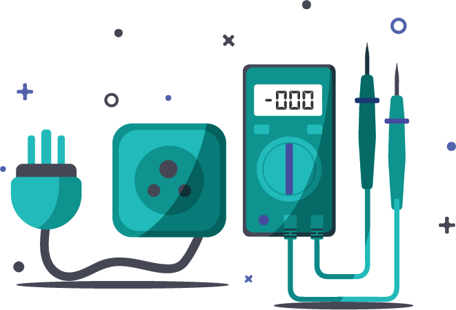

Hi,My name is Manpreet Kaur
and I'm a passionate

Work Experiences

Tulip, Muncipal Corporation
(12/06-12/08)
Developed the landing page for Smart City Ludhiana’s website
Use of HTML, CSS, Javascript and Bootstrap

PSPCL,under Metering Govt. Organization
(08/06-08/08)
Calibration, testing and repair, new facilities testing, and technical assessments of meters
Testing of different types of meters and detecting fault meters